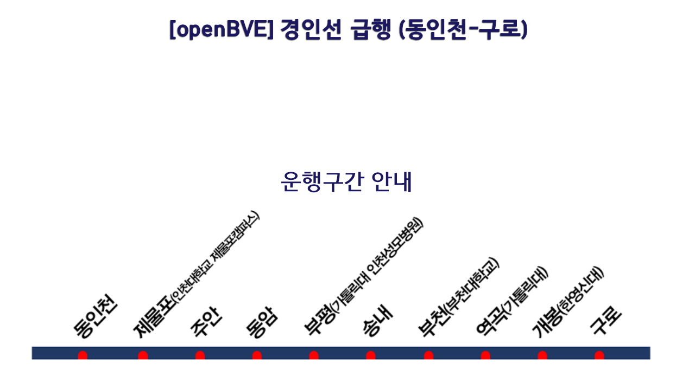
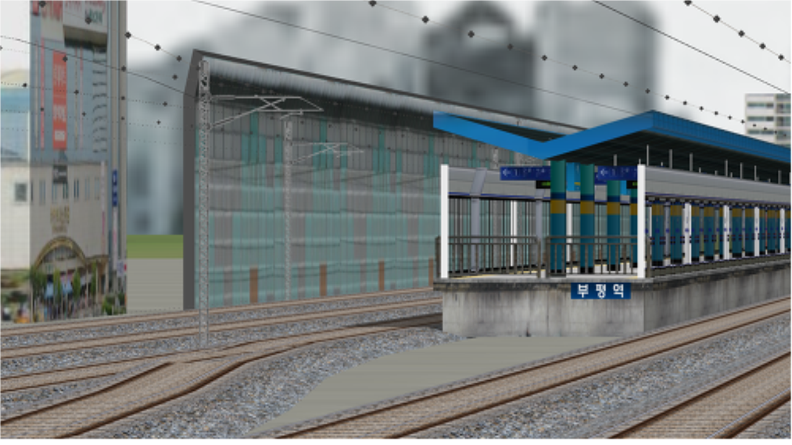
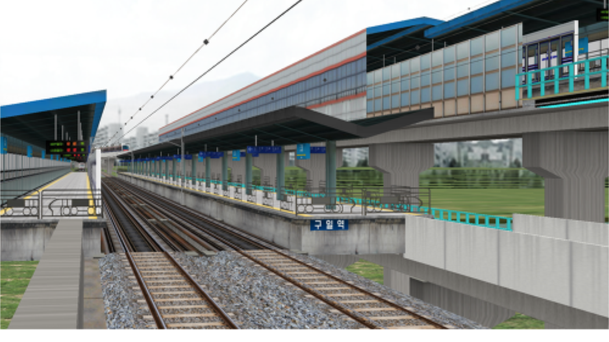
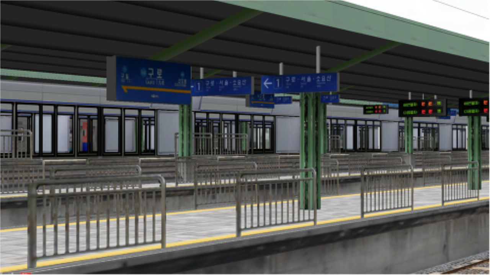
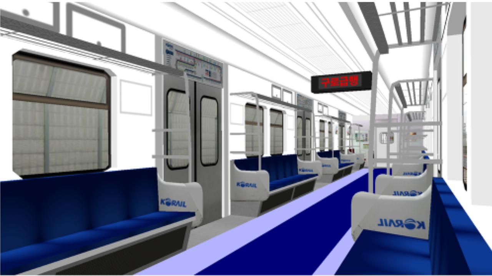

수도권 전철 1호선 동인천발 구로급행 | Seoul Metropolitan Subway Line 1 DongIncheon - Guro Express
저작권자
BVE_Data
업로드일
2017년 3월 10일 오후 7시 23분
운행구간
동인천(최초 발차) - 제물포 - 주안 - 동암
- 부평(부천대학교) - 송내 - 부천 - 역곡 - 개봉 - 구로(종착)
포함된 열차
미확인
제한속도
미확인 (80km/h 추정)
이 밑부터는 노선도 1개, 운행중 촬영된 이미지 4개가 있습니다.





Website UI Copyright by X-Cube Train Team | 웹사이트 UI 저작권은 X-Cube 철도 팀에게 있습니다.
해당 페이지에 사용된 모든 이미지, 링크, 정보는 모두 노선 개발자인 BVE_Data님에게 있습니다.